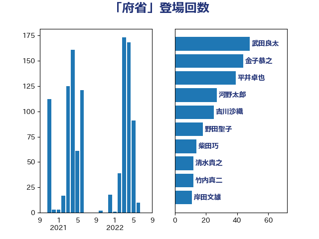

単語「府省」

| 武田良太 | 自由民主党 | 48 回 |
| 金子恭之 | 自由民主党 | 44 回 |
| 平井卓也 | 自由民主党 | 39 回 |
| 河野太郎 | 自由民主党 | 27 回 |
| 吉川沙織 | 立憲民主党 | 25 回 |
| 野田聖子 | 自由民主党 | 18 回 |
| 柴田巧 | 日本維新の会 | 14 回 |
| 清水貴之 | 日本維新の会 | 12 回 |
| 竹内真二 | 公明党 | 12 回 |
| 岸田文雄 | 自由民主党 | 11 回 |
| 田村智子 | 日本共産党 | 11 回 |
| 安江伸夫 | 公明党 | 10 回 |
| 川田龍平 | 立憲民主党 | 10 回 |
| 藤井比早之 | 自由民主党 | 10 回 |
| 伊藤岳 | 日本共産党 | 9 回 |
| 小沼巧 | 立憲民主党 | 9 回 |
| 後藤祐一 | 立憲民主党 | 8 回 |
| 牧島かれん | 自由民主党 | 8 回 |
| 坂本哲志 | 自由民主党 | 7 回 |
| 小林鷹之 | 自由民主党 | 7 回 |
| 竹谷とし子 | 公明党 | 7 回 |
| 菅義偉 | 自由民主党 | 6 回 |
| 階猛 | 立憲民主党 | 6 回 |
| 音喜多駿 | 日本維新の会 | 6 回 |
| 三浦靖 | 自由民主党 | 5 回 |
| 加藤勝信 | 自由民主党 | 5 回 |
| 山田太郎 | 自由民主党 | 5 回 |
| 笹川博義 | 自由民主党 | 5 回 |
| 上田清司 | 国民民主党 | 4 回 |
| 務台俊介 | 自由民主党 | 4 回 |
| 塩川鉄也 | 日本共産党 | 4 回 |
| 岡本あき子 | 立憲民主党 | 4 回 |
| 岸真紀子 | 立憲民主党 | 4 回 |
| 本庄知史 | 立憲民主党 | 4 回 |
| 石川博崇 | 公明党 | 4 回 |
| 西田実仁 | 公明党 | 4 回 |
| 野上浩太郎 | 自由民主党 | 4 回 |
| 宮崎雅夫 | 自由民主党 | 3 回 |
| 宮路拓馬 | 自由民主党 | 3 回 |
| 柳ヶ瀬裕文 | 日本維新の会 | 3 回 |
| 片山大介 | 日本維新の会 | 3 回 |
| 若松謙維 | 公明党 | 3 回 |
| 西村康稔 | 自由民主党 | 3 回 |
| 鈴木俊一 | 自由民主党 | 3 回 |
| 長浜博行 | 無所属 | 3 回 |
| 麻生太郎 | 自由民主党 | 3 回 |
| 三ッ林裕巳 | 自由民主党 | 2 回 |
| 伊藤孝恵 | 国民民主党 | 2 回 |
| 小林史明 | 自由民主党 | 2 回 |
| 山本博司 | 公明党 | 2 回 |
| 斉藤鉄夫 | 公明党 | 2 回 |
| 末松信介 | 自由民主党 | 2 回 |
| 森山浩行 | 立憲民主党 | 2 回 |
| 牧山ひろえ | 立憲民主党 | 2 回 |
| 田村憲久 | 自由民主党 | 2 回 |
| 福田昭夫 | 立憲民主党 | 2 回 |
| 高良鉄美 | 無所属 | 2 回 |
| 中川康洋 | 公明党 | 1 回 |
| 中西祐介 | 自由民主党 | 1 回 |
| 丸川珠代 | 自由民主党 | 1 回 |
| 伊東良孝 | 自由民主党 | 1 回 |
| 伊藤渉 | 公明党 | 1 回 |
| 伴野豊 | 立憲民主党 | 1 回 |
| 古賀之士 | 立憲民主党 | 1 回 |
| 古賀友一郎 | 自由民主党 | 1 回 |
| 吉川元 | 立憲民主党 | 1 回 |
| 吉川赳 | 無所属 | 1 回 |
| 國重徹 | 公明党 | 1 回 |
| 城井崇 | 立憲民主党 | 1 回 |
| 堀場幸子 | 日本維新の会 | 1 回 |
| 堤かなめ | 立憲民主党 | 1 回 |
| 塩村あやか | 立憲民主党 | 1 回 |
| 大口善徳 | 公明党 | 1 回 |
| 小沢雅仁 | 立憲民主党 | 1 回 |
| 山谷えり子 | 自由民主党 | 1 回 |
| 岸信夫 | 自由民主党 | 1 回 |
| 後藤茂之 | 自由民主党 | 1 回 |
| 有村治子 | 自由民主党 | 1 回 |
| 木原誠二 | 自由民主党 | 1 回 |
| 杉尾秀哉 | 立憲民主党 | 1 回 |
| 松山政司 | 自由民主党 | 1 回 |
| 松野博一 | 自由民主党 | 1 回 |
| 林芳正 | 自由民主党 | 1 回 |
| 武井俊輔 | 自由民主党 | 1 回 |
| 熊田裕通 | 自由民主党 | 1 回 |
| 田中英之 | 自由民主党 | 1 回 |
| 田村まみ | 国民民主党 | 1 回 |
| 田村貴昭 | 日本共産党 | 1 回 |
| 田畑裕明 | 自由民主党 | 1 回 |
| 若宮健嗣 | 自由民主党 | 1 回 |
| 菅家一郎 | 自由民主党 | 1 回 |
| 萩生田光一 | 自由民主党 | 1 回 |
| 西村智奈美 | 立憲民主党 | 1 回 |
| 西銘恒三郎 | 自由民主党 | 1 回 |
| 谷田川元 | 立憲民主党 | 1 回 |
| 赤池誠章 | 自由民主党 | 1 回 |
| 足立康史 | 日本維新の会 | 1 回 |
| 鈴木敦 | 国民民主党 | 1 回 |
| 青山繁晴 | 自由民主党 | 1 回 |
| 高橋光男 | 公明党 | 1 回 |
| 鳩山二郎 | 自由民主党 | 1 回 |